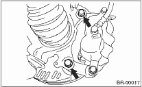
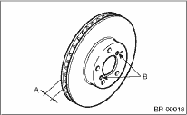

BRAKE > Front Disc Rotor
1. Set the vehicle on a lift.
2. Loosen the wheel nuts.
3. Lift-up the vehicle, and remove the front wheels.
4. Remove the caliper body and the support from housing, and suspend it from the strut using a wire.

5. Remove the disc rotor.
NOTE:
If it is difficult to remove the disc rotor from hub, drive an 8 mm bolt into the threads B of the rotor, and remove the rotor.

6. Remove mud and foreign matter from the caliper body assembly and the support.